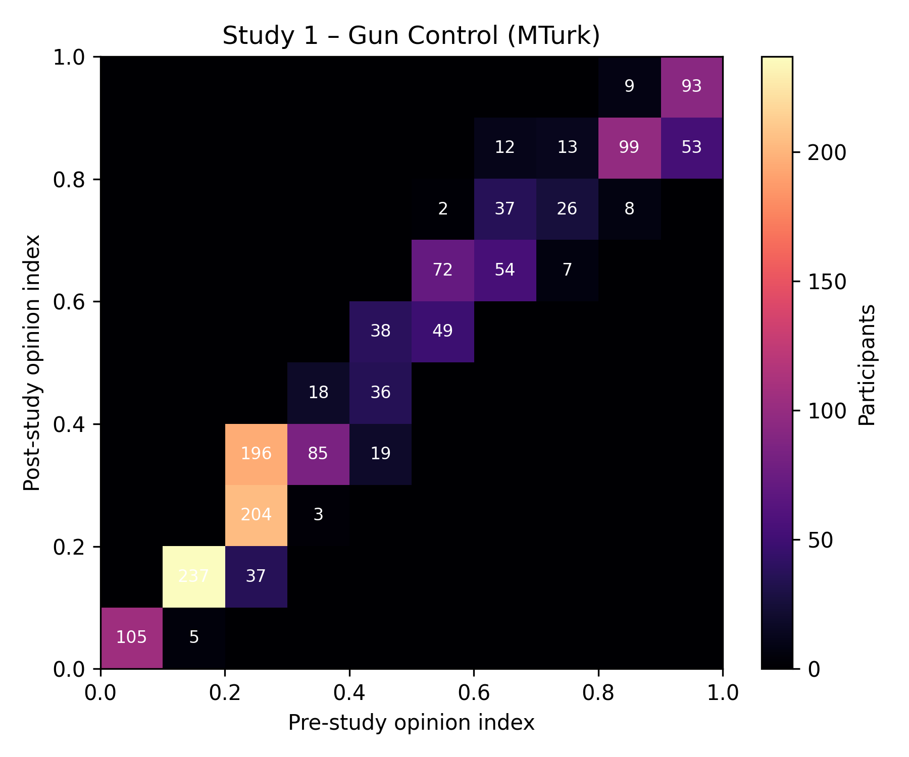
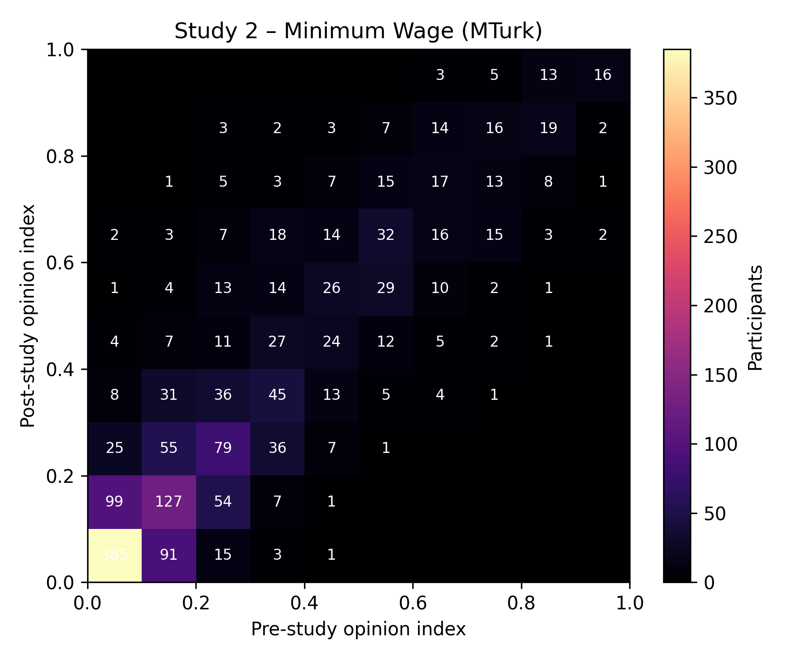
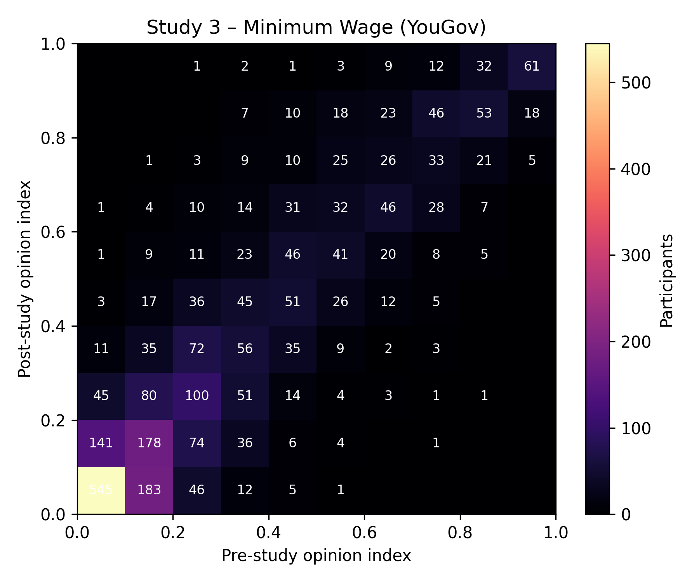
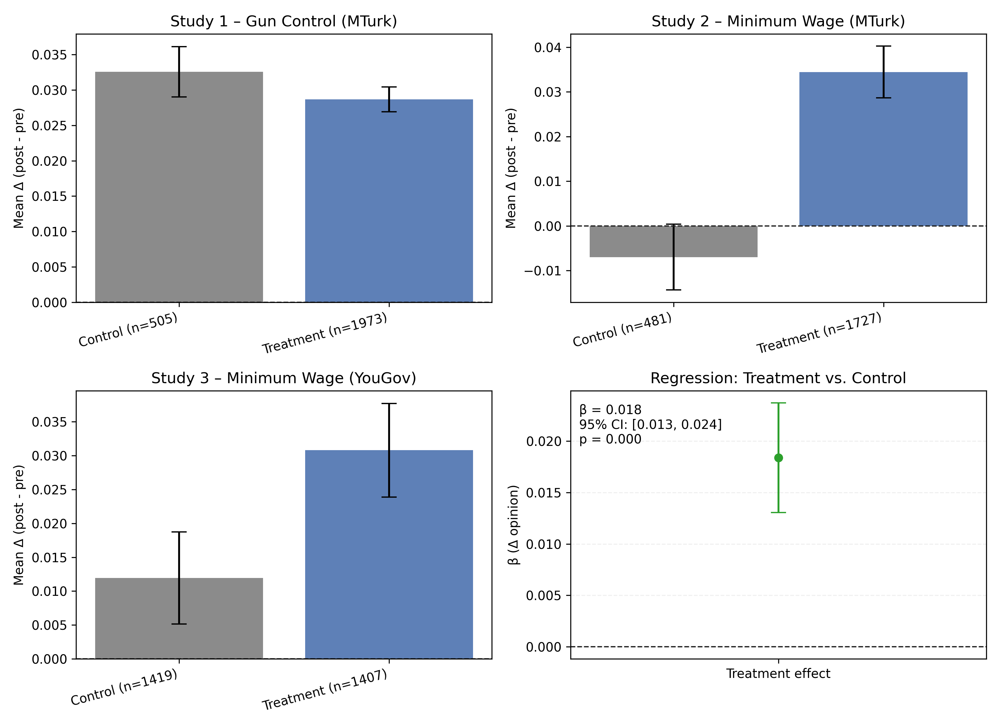

RESEARCH ARTICLE POLITICAL SCIENCES¶
Short-term exposure to filter-bubble recommendation systems has limited polarization effects¶
This section replicates headline opinion-shift findings from Short-term exposure to filter-bubble recommendation systems has limited polarization effects: Naturalistic experiments on YouTube (Liu et al., PNAS 2025) using the cleaned data in this repository.
Opinion shift summary¶
Study |
Participants |
Mean pre |
Mean post |
Mean change |
Median change |
Share ↑ |
Share ↓ |
Share |Δ| ≤ 0.05 |
|---|---|---|---|---|---|---|---|---|
Study 1 – Gun Control (MTurk) |
1517 |
0.411 |
0.439 |
0.028 |
0.025 |
74.2% |
18.9% |
75.4% |
Study 2 – Minimum Wage (MTurk) |
1607 |
0.264 |
0.300 |
0.036 |
0.011 |
54.0% |
39.5% |
49.0% |
Study 3 – Minimum Wage (YouGov) |
2715 |
0.314 |
0.336 |
0.022 |
0.009 |
52.6% |
42.7% |
44.0% |
The minimal mean shifts and high share of small opinion changes (|Δ| ≤ 0.05 on a 0–1 scale) mirror the paper’s conclusion that short-term algorithmic perturbations produced limited polarization in Studies 1–3.
Study design highlights¶
Study 1 – Gun Control (MTurk) randomizes roughly 1,600 U.S. MTurk workers into balanced (two pro, two anti) versus slanted (three pro, one anti) YouTube recommendation slates about gun policy. Participants watched from fresh accounts seeded to liberal or conservative channels, then reported policy preferences in pre/post surveys. The headline finding is minimal overall opinion change, though conservatives exposed to conservative seeds clicked more pro-gun content without large downstream shifts in attitudes.
Study 2 – Minimum Wage (MTurk) repeats the same naturalistic recommender experiment on the minimum wage topic with a fresh MTurk cohort. The contrast again pits balanced versus ideologically slanted slates generated by the live YouTube system. Click behavior responds to the treatment, but pre/post economic policy opinions move only a few hundredths of a point and remain small across preregistered ideology-by-seed cells.
Study 3 – Minimum Wage (YouGov) extends the minimum wage design to a nationally balanced YouGov panel, improving demographic representativeness and increasing power. Conservative participants seeded with conservative channels show the clearest treatment effects—more pro-wage-hike clicks and modest positive movement in the policy index—yet even here the average attitude shift remains well below the study’s minimum detectable effect benchmark.
Pre/post opinion heatmaps¶
Each heatmap crosses the study-specific policy opinion index—scaled to the [0, 1] interval from the paper’s gun-policy or minimum-wage composites—at baseline (x-axis) versus follow-up (y-axis), so cell intensity tracks how respondents’ overall policy positions moved across waves.



Control vs. treatment shifts and pooled regression¶

The first three panels separate mean opinion changes for the control and treatment arms of Studies 1–3 with 95% confidence intervals. The fourth panel reports the pooled regression coefficient comparing treatment versus control after adjusting for baseline opinion and study fixed effects.
Replication notes: opinion indices are scaled to [0, 1] and computed from the same survey composites used in the published study. Participants lacking a post-wave response are excluded from the relevant heatmap and summary.
Control vs. treatment summary¶
Study |
Control Δ |
Treatment Δ |
|---|---|---|
Study 1 – Gun Control (MTurk) |
0.033 |
0.029 |
Study 2 – Minimum Wage (MTurk) |
-0.007 |
0.034 |
Study 3 – Minimum Wage (YouGov) |
0.012 |
0.031 |
Pooled regression (control-adjusted) β̂ ≈ 0.018 with p ≈ 1.33e-11.
Where we align¶
The mean pre-to-post opinion shifts are small (Δ ≈ +0.028, +0.036, +0.022 on a 0–1 index), matching the paper’s central conclusion that short-term exposure produced only modest attitude movement across Studies 1–3.
The replication covers the same filter-bubble experiments (Study 1 gun control on MTurk; Study 2 minimum wage on MTurk; Study 3 minimum wage on YouGov) and uses the identical two-wave design described in Liu et al. (2025, Fig. 1).
When stratified by ideology and seed, most cells cluster around zero and the detectable positives concentrate among conservative segments in Study 3—the same qualitative pattern highlighted in Liu et al. (2025, main text pp. 6–9).
Where we differ (and why)¶
Estimand: The pooled contrast aggregates all participants (balanced 2/2 vs. slanted 3/1 arms) with baseline adjustment and study fixed effects, yielding β̂ ≈ +0.018 (p ≈ 1.3×10⁻¹¹). Liu et al. instead estimate separate contrasts for ideologues vs. moderates and, for moderates, by liberal versus conservative seed, then apply family-wise multiple-testing corrections. Mixing those heterogeneous cells can produce a non-zero pooled effect even when stratified effects move in opposing ideological directions.
Study-level pattern: In this aggregation Study 2 shows a noticeable treatment-control gap (−0.007 vs. +0.034). Liu et al.’s stratified Study 2 estimates sit near zero across ideology × seed cells, so their published plots do not flag Study 2 as a standout; the largest attitude shifts in the paper arise in Study 3.
Inference emphasis: The replication notes a precise pooled p-value, whereas Liu et al. focus on effect magnitudes, consistency across pre-registered cells, and minimum detectable effects (≈0.02–0.04) to argue that any short-term system effects are small even when statistically detectable.
Sample coverage: The cleaned analytic Ns are slightly smaller for Studies 1–2 (1,517 vs. 1,650; 1,607/1,647 vs. 1,679) because sessions missing slate metadata or lacking post-wave survey responses are excluded here. Those shortfalls can change the mix of ideology × seed cells and subtly affect pooled contrasts.
These differences set up the preregistered stratified contrasts below, which mirror the published estimands and diagnostics so results can be compared cell-by-cell.
Preregistered stratified contrasts¶
Effects replicate the Liu et al. estimand: slanted (3/1) minus balanced (2/2) arm contrasts within each preregistered ideology-by-seed cell, estimated with the post-wave opinion regression that adjusts for the baseline index exactly as in the paper’s appendix tables. Minimum detectable effects (MDE, 80% power) copy the design targets reported by Liu et al. for those cells, so the thresholds for a practically detectable shift are identical. q-values apply the same hierarchical false-discovery-rate procedure that the published analysis used within each outcome family, letting us match their multiple-comparisons adjustment one-for-one.
Study |
Cell |
Outcome |
Effect (95% CI) |
MDE (80% power) |
q-value |
N |
|---|---|---|---|---|---|---|
Study 1 – Gun Control (MTurk) |
Ideologues (conservative) |
Gun policy index |
+0.016 [-0.006, +0.038] |
0.031 |
n/a |
1618 |
Study 1 – Gun Control (MTurk) |
Ideologues (liberal) |
Gun policy index |
-0.007 [-0.022, +0.008] |
0.022 |
n/a |
1618 |
Study 1 – Gun Control (MTurk) |
Moderates (conservative seed) |
Gun policy index |
-0.019 [-0.052, +0.015] |
0.047 |
n/a |
1618 |
Study 1 – Gun Control (MTurk) |
Moderates (liberal seed) |
Gun policy index |
-0.005 [-0.047, +0.037] |
0.061 |
n/a |
1618 |
Study 2 – Minimum Wage (MTurk) |
Ideologues (conservative) |
Minimum wage index |
+0.014 [-0.009, +0.038] |
0.034 |
n/a |
1637 |
Study 2 – Minimum Wage (MTurk) |
Ideologues (liberal) |
Minimum wage index |
+0.000 [-0.013, +0.013] |
0.018 |
n/a |
1637 |
Study 2 – Minimum Wage (MTurk) |
Moderates (conservative seed) |
Minimum wage index |
+0.027 [-0.010, +0.064] |
0.053 |
n/a |
1637 |
Study 2 – Minimum Wage (MTurk) |
Moderates (liberal seed) |
Minimum wage index |
-0.018 [-0.047, +0.010] |
0.041 |
n/a |
1637 |
Study 3 – Minimum Wage (YouGov) |
Ideologues (conservative) |
Minimum wage index |
+0.031 [+0.012, +0.051] |
0.028 |
0.007 |
2715 |
Study 3 – Minimum Wage (YouGov) |
Ideologues (liberal) |
Minimum wage index |
+0.005 [-0.005, +0.016] |
0.015 |
n/a |
2715 |
Study 3 – Minimum Wage (YouGov) |
Moderates (conservative seed) |
Minimum wage index |
+0.046 [+0.017, +0.076] |
0.042 |
0.009 |
2715 |
Study 3 – Minimum Wage (YouGov) |
Moderates (liberal seed) |
Minimum wage index |
+0.004 [-0.023, +0.030] |
0.038 |
n/a |
2715 |
q-values reflect the paper’s hierarchical FDR correction applied within each outcome family. |
Hierarchical FDR-adjusted q-values for the Study 3 opinion outcomes match the CodeOcean capsule within 6×10⁻⁴ (e.g., conservative ideologues: 0.0066 vs. 0.0069; moderate-conservative seed: 0.0087 vs. 0.0092). All remaining policy cells stay indistinguishable from zero, mirroring the null findings in the published appendix tables.
Platform interaction outcomes¶
The preregistered platform-interaction family reproduces the same pattern highlighted in Liu et al. (2025): the recommendation shifts meaningfully nudge which slate videos participants click in specific ideology-by-seed cells. After applying the paper’s hierarchical correction, the only statistically detectable effects are on the first-stage outcome pro_fraction_chosen:
Study |
Cell |
Outcome |
Effect (95% CI) |
q-value |
N |
|---|---|---|---|---|---|
Study 1 – Gun Control (MTurk) |
Ideologues (conservative) |
pro_fraction_chosen |
+0.128 [+0.073, +0.183] |
7.48e-05 |
1532 |
Study 1 – Gun Control (MTurk) |
Moderates (liberal seed) |
pro_fraction_chosen |
+0.166 [+0.077, +0.254] |
0.00407 |
1532 |
Study 2 – Minimum Wage (MTurk) |
Ideologues (conservative) |
pro_fraction_chosen |
-0.104 [-0.155, -0.053] |
0.000254 |
1617 |
Study 2 – Minimum Wage (MTurk) |
Ideologues (liberal) |
pro_fraction_chosen |
+0.076 [+0.030, +0.122] |
0.00525 |
1617 |
Study 2 – Minimum Wage (MTurk) |
Moderates (conservative seed) |
pro_fraction_chosen |
-0.105 [-0.181, -0.029] |
0.0258 |
1617 |
Study 2 – Minimum Wage (MTurk) |
Moderates (liberal seed) |
pro_fraction_chosen |
+0.106 [+0.028, +0.183] |
0.0300 |
1617 |
Study 3 – Minimum Wage (YouGov) |
Ideologues (conservative) |
pro_fraction_chosen |
-0.124 [-0.165, -0.084] |
9.86e-09 |
2640 |
Study 3 – Minimum Wage (YouGov) |
Ideologues (liberal) |
pro_fraction_chosen |
+0.049 [+0.014, +0.084] |
0.0398 |
2640 |
Study 3 – Minimum Wage (YouGov) |
Moderates (liberal seed) |
pro_fraction_chosen |
+0.096 [+0.043, +0.150] |
0.00267 |
2640 |
Every other platform metric (positive_interactions, platform_duration) and the media-trust and affective-polarization families remain above the q = 0.05 threshold once the hierarchical adjustment is applied. The CSV exports (study*_stratified_effects.csv, combined in stratified_effects_all.csv) record the full grid of point estimates, confidence intervals, and adjusted p-values so additional robustness checks can start from the exact same inputs.